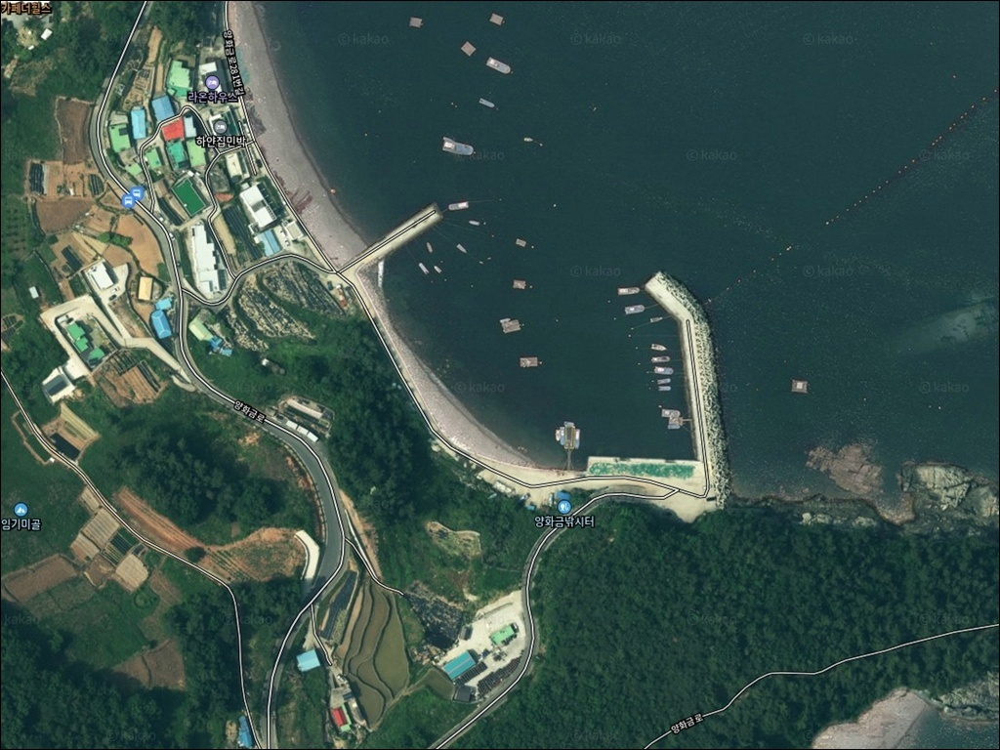
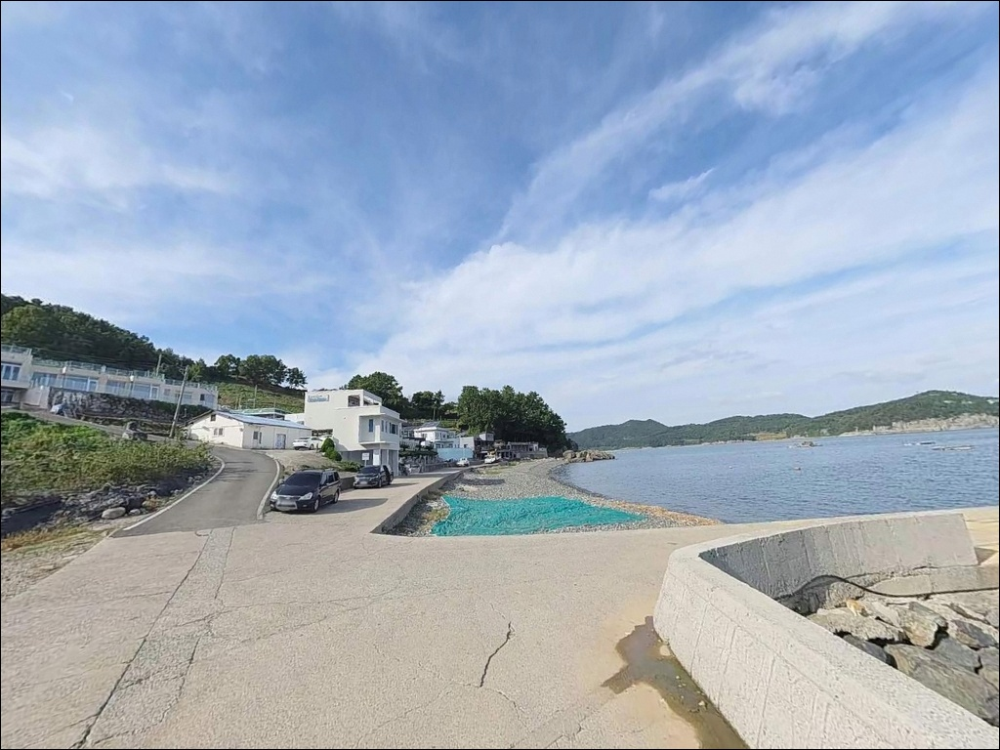
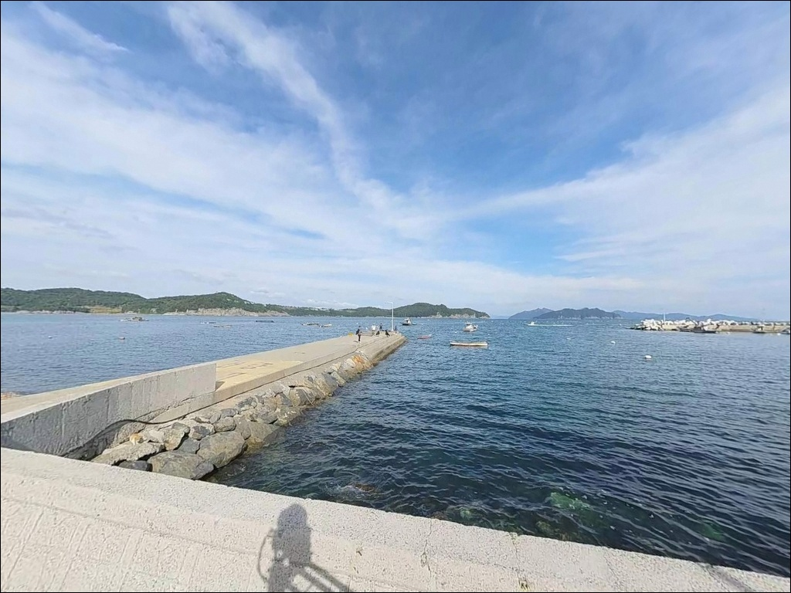
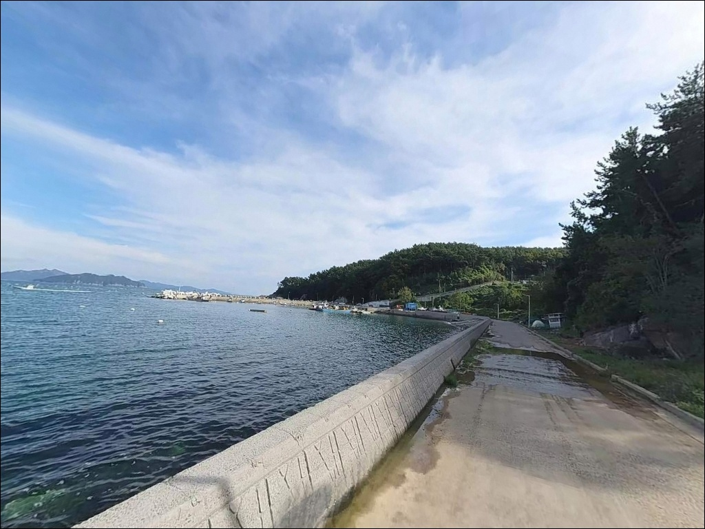
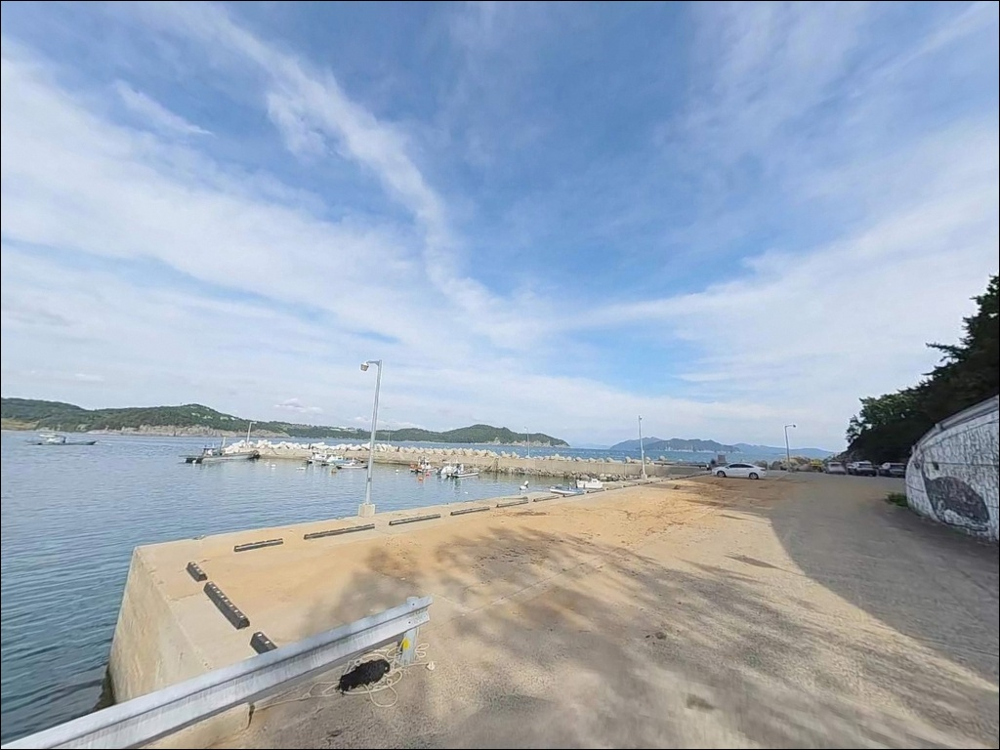
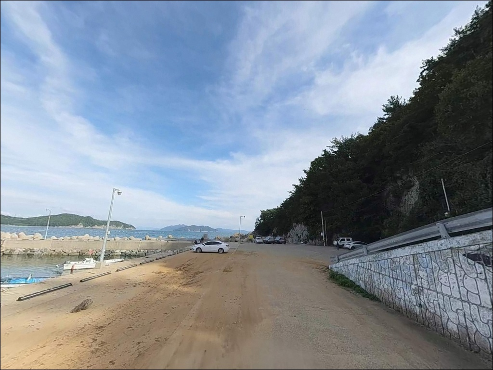
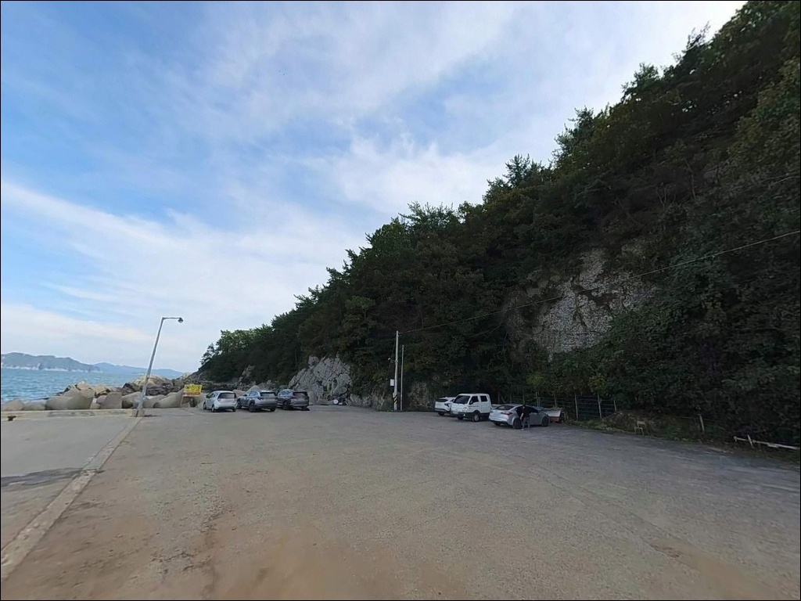
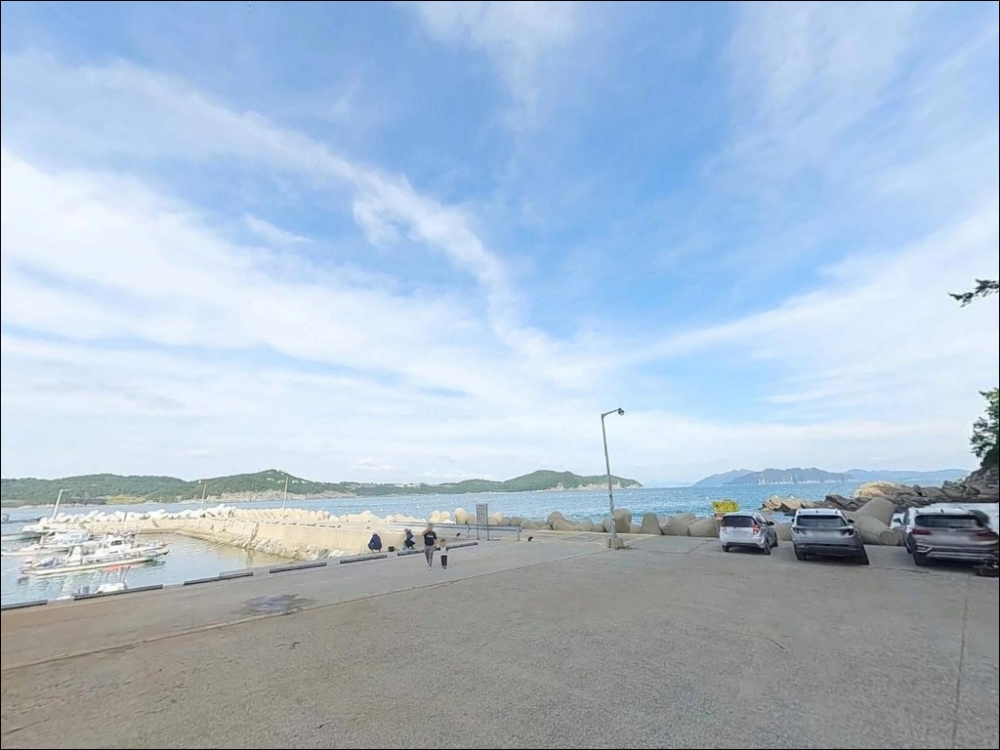
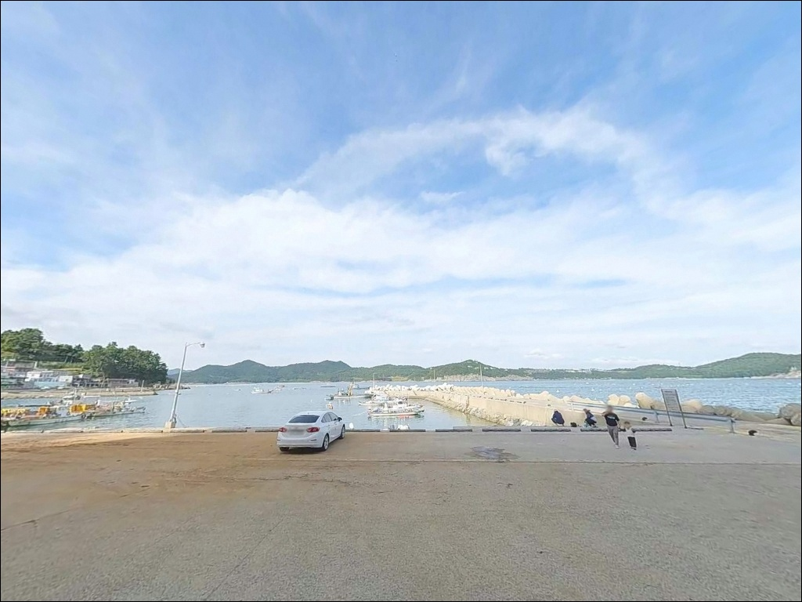

조류 정체되면 잡어만 꼬일 때, 양화금방파제 썰물 콧부리 입질 타이밍
이 페이지에는 광고(제휴 링크 포함)가 있으며, 광고 링크를 통해 구매하면 운영자가 판매 수익 또는 수수료를 받을 수 있습니다. 포인트 사진: 카카오맵 스카이뷰·로드뷰. 이 페이지의 지도·사진 이미지는 카카오맵의 실제 서비스 이미지와 다를 수 있습니다.


포인트 안내
양화금방파제(청사포)
경남 남해군 삼동면 동천리 1
방파제 콧부리와 수상좌대 사이,
조류가 외항 쪽으로 흐르기 시작하는 순간
입질이 살아납니다.
반대로 조류가 정체되는 시간에는
잡어 위주로 반응이 바뀌는 구조라,
이 포인트는 물때 계산이 먼저입니다.
경남 남해군 삼동면 동천리,
물미해안도로 끝자락에 자리한 양화금마을은
방파제·수상좌대·갯바위가 한 구역에 모인
복합 구조의 낚시터입니다.
마을 어촌계가 관리하는 유료 낚시터로 운영되며,
찌낚시부터 에깅, 원투낚시까지
복수의 방식이 동시에 성립하는 포인트입니다.
이 글은 양화금방파제(청사포)의
진입 동선, 낚시 지형 조건, 조류 특성,
차박 여건과 주변 인프라에 집중합니다.
조황 단정이나 특정 어종 보장은
이 글의 범위에 포함되지 않습니다.

1. 진입 동선과 차량 접근 여건
삼동면 동천리 양화금마을 진입은
물미해안도로(국도 3호선 지선)에서
마을 이정표를 따라 꺾어 들어가는 구조입니다.
방파제 앞까지 포장도로가 이어져 있어
차량 접근 자체는 어렵지 않습니다.
다만 마을 내부 도로는
왕복 1차선 수준의 좁은 포장로로,
대형 차량이나 카라반은
교행 구간에서 속도를 줄이고 여유 있게 진입해야 합니다.
회차는 마을 안쪽 공터를 이용하는 방식으로
승용차 기준 가능한 편입니다.
주차 공간은 방파제 입구 인근 도로변과
마을 공터를 활용하는 구조입니다.
낚시객 차량이 집중되는 성수기에는
이른 시간 진입이 유리하며,
늦게 도착하면 방파제에서 조금 떨어진
마을 안쪽 공간을 이용해야 합니다.

2. 차박 환경과 야간 체류 여건
양화금마을은 조용한 어촌 분위기를 유지하는 편입니다.
야간 차량 통행이 드물고
외부 관광객 유입도 특정 계절·시간대에 집중되는 구조라,
성수기를 피하면 비교적 차분한 분위기에서
차 안에서 하룻밤 머무는 것이 가능합니다.
방파제와 마을 도로를 따라
가로등이 설치되어 있어
완전한 암흑 환경은 아닙니다.
야간 낚시 시 개인 조명은 기본으로 갖춰야 하지만,
시야 확보 자체는 불편하지 않은 수준입니다.
마을 전체가 관리형 낚시터로 운영되는 만큼
현장 안내와 어촌계 지침을 사전에 파악하고
진입하는 것이 매너입니다.
외해와 맞닿은 동쪽 지형이라
동풍이나 남동풍이 강해지는 날은
방파제 외항 쪽 파도가 높아질 수 있습니다.
출발 전 기상청 해상예보를 확인하고,
너울 예보 시에는
방파제 가장자리 접근은 피하는 것이 안전합니다.


3. 주변 편의시설 및 인프라 현황
양화금마을 자체에는 편의점이나 마트가 없는 편입니다.
독일마을 방향(약 3km)으로 이동하면
숙박시설·식당·카페 등 관광 편의시설이 있으며,
삼동면 소재지 방향으로 5km권 안에는
농협 하나로마트와 편의점,
주유소가 갖춰져 있습니다.
출발 전 식수·연료·채비 소모품은
이 구간을 통해 미리 준비하는 것이 현실적입니다.
반경 3km권에서 동천주유소와
마을 내 소규모 점포가 확인됩니다.
응급 상황 발생 시 남해군종합병원은
남해읍 방향 약 15km 거리로,
비상약품과 안전 장비는 현장에서 완비하는 편이 좋습니다.

4. 조류 타이밍을 모르면 손해 보는 포인트
양화금방파제(청사포)는 조류 의존도가 높은 포인트입니다.
썰물 시 외항 콧부리 방향으로 조류가 흐르기 시작하면
입질이 집중되고,
조류가 정체되는 구간에는 반응이 크게 떨어집니다.
바다타임에서 남해군 삼동면 기준 물때를 확인하고
창조·낙조 전환 타이밍을 미리 계산해
입장 시각을 맞추는 것이 이 포인트 공략의 기본입니다.
마을 전체가 유료 관리형 낚시터로 운영되므로
현장 입장 전 어촌계 안내를 확인하는 것이 필요합니다.
테트라포드 위 이동은
수심이 깊고 미끄러운 구간이 있어
갯바위화 착용이 필수이며,
일부 유실된 테트라포드 구간에서는
발밑 장애물에 특히 주의해야 합니다.
구명조끼는 방파제 진입 전부터 착용하고,
야간 낚시 시에는 헤드랜턴과
개인 발광 장비를 반드시 갖추어야 합니다.
외항 쪽 파도가 세지는 날은
방파제 끝단 접근을 자제하는 것이
현장 판단의 기본 기준입니다.

5. 지형 기반 낚시 여건 분석
양화금방파제(청사포)는 100~130m 규모의 큰 방파제와
약 60m 규모의 작은 방파제가 마주보는 구조입니다.
큰 방파제 외항에는 중대형 테트라포드가
촘촘히 쌓여 있으며,
방파제 끝단 쪽으로 갈수록
조류 소통이 활발해지는 구조입니다.
방파제 시작 지점에서 외항 갯바위가 자연스럽게 연결되어
지형이 다채롭습니다.
수심은 방파제 주변이 5~6m,
외항 방향으로 멀리 캐스팅하면 7~8m,
수상좌대가 설치된 외항 구간은 10m 내외입니다.
바닥은 펄과 사질 혼합 구조에
수중여가 고루 발달해 있어
다양한 어종이 머물기 좋은 지형 조건을
갖추고 있습니다.
방파제 콧부리와 수상좌대 사이 수로는
조류 변화를 직접 받는 핵심 구간입니다.
이 구간을 조류 흐름 방향에 맞게 공략하는 것이
이 포인트의 핵심 전략입니다.
최신 조황은 출조 전에
"양화금방파제(청사포) 조황"으로
직접 검색해 확인하시기 바랍니다.


6. 포인트에 어울리는 낚시 스타일
찌낚시는 이 포인트의 메인 방식입니다.
방파제 콧부리와 좌대 사이 수로 구간은
감성돔·벵에돔·돌돔을 겨냥하기 좋은 지형 조건을 갖추고 있습니다.
수심이 10m에 가까운 외항 구간이라
반유동 채비로 수심층을 잡아주는 운용이
이 포인트에 적합합니다.
에깅은 가을 시즌에 특히 반응이 좋은 방식입니다.
외항 테트라포드와 인근 갯바위 경계 지점이
무늬오징어와 갑오징어 공략에 유효하며,
봄부터 여름까지는 갑오징어를 노리는
소형 에기 운용도 성립하는 구조입니다.
원투낚시는 방파제 내항과
완만하게 경사진 모래·펄 혼합 바닥 구간이
주요 공략 포인트입니다.
도다리·붕장어·보리멸을
기대해볼 수 있는 지형 조건이며,
조류가 잠잠해지는 정조 타이밍에
채비를 멀리 보내는 방식이
이 구간에 어울리는 운용법입니다.
볼락 라이트게임도 겨울철 야간에
방파제 내항 석축과 테트라 사이를
소형 지그헤드로 탐색하면 반응을 기대할 수 있습니다.

7. 대안 포인트와 플랜 B 동선
양화금방파제(청사포)에 낚시객이 몰리거나
조류가 기대에 못 미치는 날이라면
물건 흰등대 방파제(약 2.5km)가
첫 번째 대안입니다.
포인트 확장성이 좋고
남해 동부 해역의 동일한 조류 패턴이 적용되어
찌낚시와 루어낚시를 모두 운용할 수 있습니다.
장포항 방파제(약 3km)는
접근성과 안정성이 우수한 대안 포인트입니다.
규모는 양화금보다 크고
주차 여건도 상대적으로 여유로운 편이라,
처음 이 해역을 방문하는 낚시인이라면
장포항을 먼저 살펴본 뒤
양화금으로 이동하는 동선도 합리적입니다.
남해 동부권 전반에는
노루목방파제, 적량마을 방파제,
추도 방파제 등 유사 성격의 포인트가
10km권 안에 다수 분포합니다.
이 해역은 원투·에깅·찌낚시 모두에
어울리는 해역 특성을 공유하므로
한 곳에서 여의치 않으면
동선을 확장하는 방식이 유효합니다.

조류 타이밍 맞추면
양화금방파제(청사포)가 달라 보입니다
찌낚시와 에깅, 원투낚시를 한 장소에서
모두 시도할 수 있는 포인트는 흔하지 않습니다.
양화금방파제(청사포)는 방파제·갯바위·수상좌대가
마을 앞 한 구역에 모여 있어
복수의 낚시 방식을 유연하게 운용하기 좋은 구조입니다.
조류가 외항 콧부리 방향으로 흐르기 시작하는
그 타이밍이 이 포인트의 핵심입니다.
반면 마을 도로 폭이 좁아 대형 차량은
진입 전 도로 여건을 사전 확인해야 하고,
성수기에는 주차 경쟁도 있는 편입니다.
유료 관리형 낚시터라는 점을 감안해
현장 어촌계 안내를 미리 파악하고
준비된 상태로 도착하는 것이
이 포인트를 제대로 활용하는 방법입니다.
조용한 어촌 분위기에서
조류 소통 좋은 외항을 바라보며
찌를 띄워두는 낚시와
해가 지면 차 안에서 쉬어가는 여정이
동시에 가능한 곳이 양화금입니다.